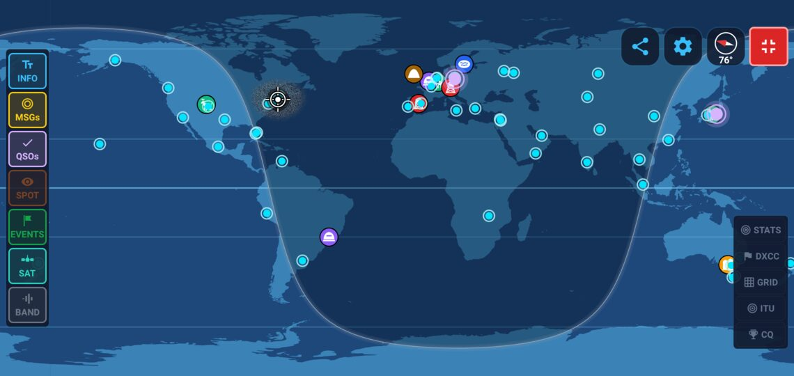
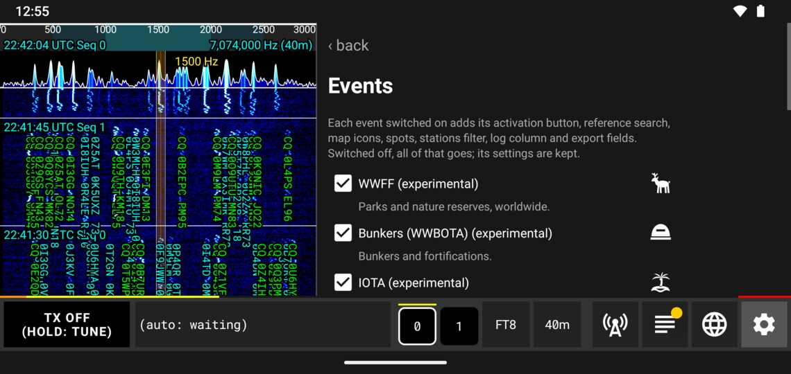
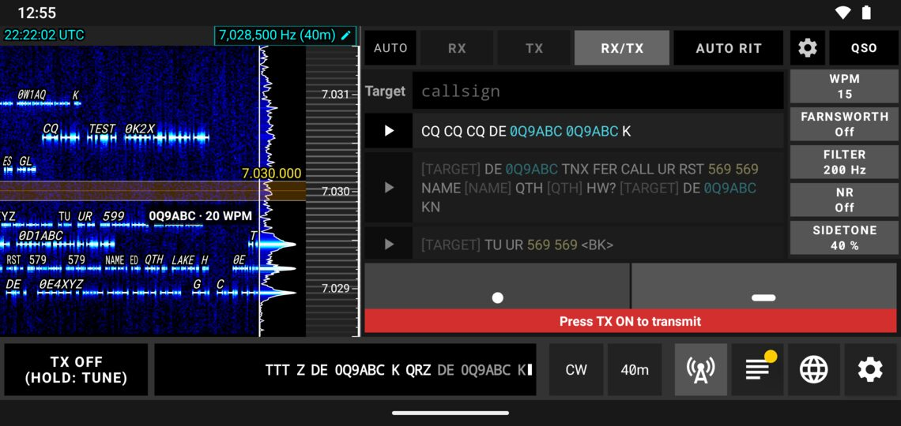

Több üzemmódú amatőrrádió Androidra, iOS-re, Windowsra, macOS-re és Linuxra
Alakítsd androidos telefonodat vagy táblagépedet, iPhone-odat vagy iPadedet, illetve Windows, macOS vagy Linux rendszerű számítógépedet teljes digitális üzemmódú amatőrrádió-állomássá. Csatlakoztasd a rádiót, adj CQ-t, és forgalmazz az egész világgal.

Jellemzők
- Ingyenes, reklámmentes, fiók nélkül
- Androidos telefonok és táblagépek, iOS, Windows, macOS és Linux
- 37 nyelv
Üzemmódok
Digitális gyenge jeles üzemmódok, billentyűzetes csevegés, morze, távgépíró, képek és hang. A Q65, MSK144, FST4, FST4W és JTTY kísérleti.
- FT8
- FT4
- FT2
- LQ8
- JS8
- WSPR
- Q65
- MSK144
- FST4
- FST4W
- CW
- RTTY
- JTTY
- SSTV
- DRAW
- SSB
Rádiók
Csatlakoztasd és kész, USB-n, több mint 70 rádiómodellel: a qFT8 felismeri a rádiót, és magától beállítja a CAT-ot és a hangot. Bármely más rádió VOX audiokábelen vagy DigiRigen keresztül működik.
- QRP Labs
- Icom
- Yaesu
- Kenwood
- Elecraft
- Xiegu
- Lab599
- GuoHe
- FlexRadio
- (tr)uSDX
- FX-4CR
- KN990
- mcHF
- Wolf SDR
- QuantumSDR
SDR vevők
Vétel a hálózatodon lévő szoftveres rádión keresztül: RTL-SDR hálózati szerverrel vagy OpenHPSDR vevővel, például a Hermes-Lite 2-vel. Vagy dugj egy RTL-SDR dongle-t közvetlenül az Android telefonodba. Csak vétel.
- RTL-SDR
- KiwiSDR
- OpenHPSDR
- Hermes-Lite 2
- Red Pitaya
- Airspy / RTL-SDR server
- remote SDR host
Forgalmazás
A teljes AUTO válaszol a CQ-kra, végigviszi a QSO-t és naplózza, az általad megadott ismétlési korlátokkal; vagy hívd az állomásokat magad egy koppintással. CW képernyős paddle-lel, billentyűzettel és memóriákkal, SSB hangmemóriákkal, valamint adási időkorlátok, amelyek védik a rádiódat.
Díjprogramok
Vadássz és aktiválj: hivatkozások a térképen és az állomáslistában, élő spotok, QSO-számláló és ADIF exportok. A POTA és a SOTA kezdettől be van kapcsolva; a többi kísérleti.
- POTA
- SOTA
- WWFF
- WWBOTA
- IOTA
- SiOTA
- HEMA
- LLOTA
- WWTOTA
- RAZA
Versenyek (kísérleti)
A csere, a duplikátumellenőrzés, a pontszám és a Cabrillo export. Az AUTO ki van kapcsolva azokban a versenyekben, amelyek szabályai tiltják az automatizált QSO-kat.
- ARRL Field Day
- Winter Field Day
- ARRL RTTY Roundup
- ARRL International Digital Contest
- FT Challenge
- EU VHF
Online naplók
Minden QSO naplózáskor azonnal megy az általad választott szolgáltatásokhoz. A qFT8log egy naplót oszt meg a saját qFT8-aid között. ADIF import és export.
- QRZ
- Logbook of the World
- eQSL
- Club Log
- HRDLog
- HamQTH
- World Radio League
Naplózóprogramok a hálózatodon
FT8 hálózati napló és ADIF UDP-n, mindkét irányban, valamint az AC Log és DXLab felületek (kísérleti). Tesztelve:
- N1MM Logger+
- Log4OM 2
- N3FJP AC Log
- CQRLOG
- GridTracker
- Wavelog
- Cloudlog
- qFT8log
Térkép és spotok
Élő világtérkép minden hallott állomásról, távolsággal és iránnyal; spotok a PSK Reporterről és a WSPRnetről, LQ8 aktivitás, POTA és SOTA aktiválások, sávterjedés, műholdpályák és térképi iránytű. A saját dekódolásaid jelentve lesznek a PSK Reporternek és a WSPRnetnek.
Bárhol
Távvezérlés bármely böngészőből: hallgasd a rádiót és beszélj SSB-n, privát link és jelszó mögött. Idő az internetről vagy GPS-ről, és az alkalmazás kikapcsolt képernyővel is fut.



Letöltés
- AndroidEhhez az eszközhöz
 Letöltés .apk: 5.93MB
Letöltés .apk: 5.93MB - Windows (64 bites)Ehhez az eszközhöz
 Letöltés .zip: 40.12MB
Letöltés .zip: 40.12MB - Windows (32 bites)Ehhez az eszközhözLetöltés .zip: 47.53MB
- macOS (minden Mac: Apple Silicon és Intel)Ehhez az eszközhözLetöltés .dmg: 88.48MB
- Linux (64 bites, Intel/AMD)Ehhez az eszközhözLetöltés .tar.gz: 51.73MB
- Linux (32 bites, Intel/AMD)Ehhez az eszközhözLetöltés .tar.gz: 74.80MB
- Linux (ARM 64 bites, Raspberry Pi 4/5)Ehhez az eszközhözLetöltés .tar.gz: 71.76MB
- Linux (ARM 32 bites, Raspberry Pi 2/3)Ehhez az eszközhözLetöltés .tar.gz: 67.13MB
A közvetlen Android-letöltés (.apk) a Play Áruházon kívül települ: az Android kérheti, hogy engedélyezd az alkalmazások telepítését a böngészőből vagy a fájlkezelőből.
A felhasználói kézikönyv olvasása
Bármely számítógép Java 21 vagy újabb verzióval (például egy Raspberry Pi): .jar: 15.22MB
Támogasson a Windlereye zenei projektem meghallgatásával

Külön köszönet és fő közreműködők
Roger Ribes González (EA3ISA) — Felbecsülhetetlen útmutatás, szoros együttműködés és kiterjedt terepi bétatesztelés a qFT8 legkorábbi fejlesztési szakaszai óta, jelentősen hozzájárulva a SOTA és POTA funkciók kialakításához.
Andriy Dinets (UR4LBR) — Kiterjedt bétatesztelés és létfontosságú segítség a spektrogram-megjelenítés, a digitális jelfeldolgozás, az SNR pontosság bonyolult kérdéseinek megoldásában, valamint a SOTA és POTA képességek fejlesztésében.
Rob Colclough (GW8RDI) — A QuantumSDR és uSDX Open projektek megalkotója és fejlesztője. Meghatározó szerepet játszott abban, hogy a qFT8 több adó-vevőt és változatos Android-eszközt támogasson, mélyreható műszaki tanácsadást és tesztelést nyújtva.